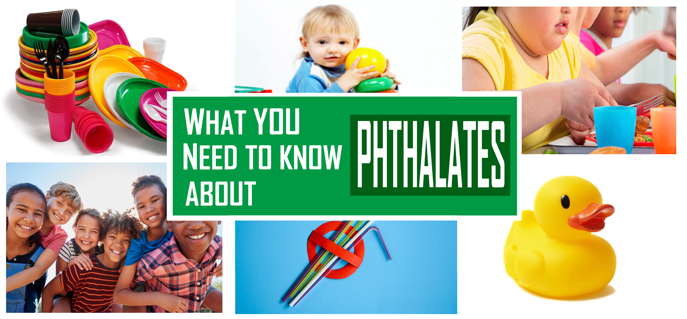

Plasticizers, mainly phthalates, can interrupt endocrine system even if at very low level of exposure, and there is evidence of plasticizers depositing in animal brain. Concerns have been rising in pediatricians and scientists. Obesity, which is a major public health problem across the world, is also associated with plasticizer exposure. First fat and now sugar have been blamed for causing obesity, while increasing evidence shows that plasticizer pollution is also playing an important role. However, effects of plasticizers on bodyweight within different age and gender groups are different. With more detailed exposure monitoring data of plasticizer exposure available at NHANES datasets, we can now explore the relationship between body weight and plasticizer exposure.
All data was retrieved from the the National Health and Nutrition Examination Survey. The National Health and Nutrition Examination Survey (NHANES) is a program of studies designed to assess the health and nutritional status of adults and children in the United States.
In the study, we uesd demographics data (DEMO2011-2012, DEMO2013-2014 and DEMO2015-2016), phthalates metabolites data (PHTHTE2011-2012, PHTHTE2013-2014 and PHTHTE2015-2016) and body measures data (BMX2011-2012, BMX2013-2014 and BMX2015-2016).
Our study mainly consists of the following two parts:
Phthalate exists in human body in different types. In the original dataset, eight types of phthalates in participants’ urine were recorded. Therefore, we analyzed percent contribution of each type of phthalate to the sum-total phthalate and visualized it. Then, we made some plots to compare phthalate exposure in different subgroups of people.
First, we made some plots and perceived association between phthalate exposure body mass index. We also noticed that the effects of phthalate exposure on BMI are defferent between different age and gender groups.
Then, we fitted logistic regression model to analyze the relationship.We defined a categorical variable, where being overweight/obese was 1 and being normal weight/underweight was 0. Then, the logistic regression model is given by (log(p/(1-p)) ~ log_value + age + race + poverty_status), where p stands for the probability of being overweight/obese. Since the association between phthalates and obesity might be modified by gender and age, we stratified the result by gender and age. The result is recorded in the table below. It shows odds of obesity changes associated with unit phthalate exposure change in each age and gender group, and their 95% percent confidence intervals.
| group | female | male |
|---|---|---|
| adult | 1.18(1.09, 1.29) | 1.11(1.02, 1.2) |
| children | 1(0.89, 1.11) | 1.15(1.02, 1.29) |
Among adults, for a one-unit increase in the sum-total phthalate exposure, we expect to see about 18% and 11% increase in the odds of being overweight/obese for females and males, respectively, adjusting for age, race and poverty status.
Among children, there is no association between phthalate and obesity in females statistically. While in males, for a one-unit increase in the sum-total phthalate exposure, we expect to see about 15% increase in the odds of being overweight/obese, adjusting for age, race and poverty status.
Previous research shows that phthalates have greater influence on BMI for females than for males. Our findings is consistent with this conclusion only for adult. Actually, our analysis demonstrates that the situation is exactly the opposite for children – phthalates only affect boys’ BMI but not girls’. That’s possibly because phthalates has similar effects on human body as estrogen does. Just like estrogen, it causes fat accumulation in human body. However, for girls, it causes precocious, which is more serious than obesity and can increase the risk of diseases for whole life, instead of fat accumulation.
Though plastic products have brought huge convenience to modern life, the phthalates contained in them not only does harm to animals but also to ourselves. It is well worth the effort to regulate the application of such chemicals in industry and mitigate the harm in population who have been exposed .